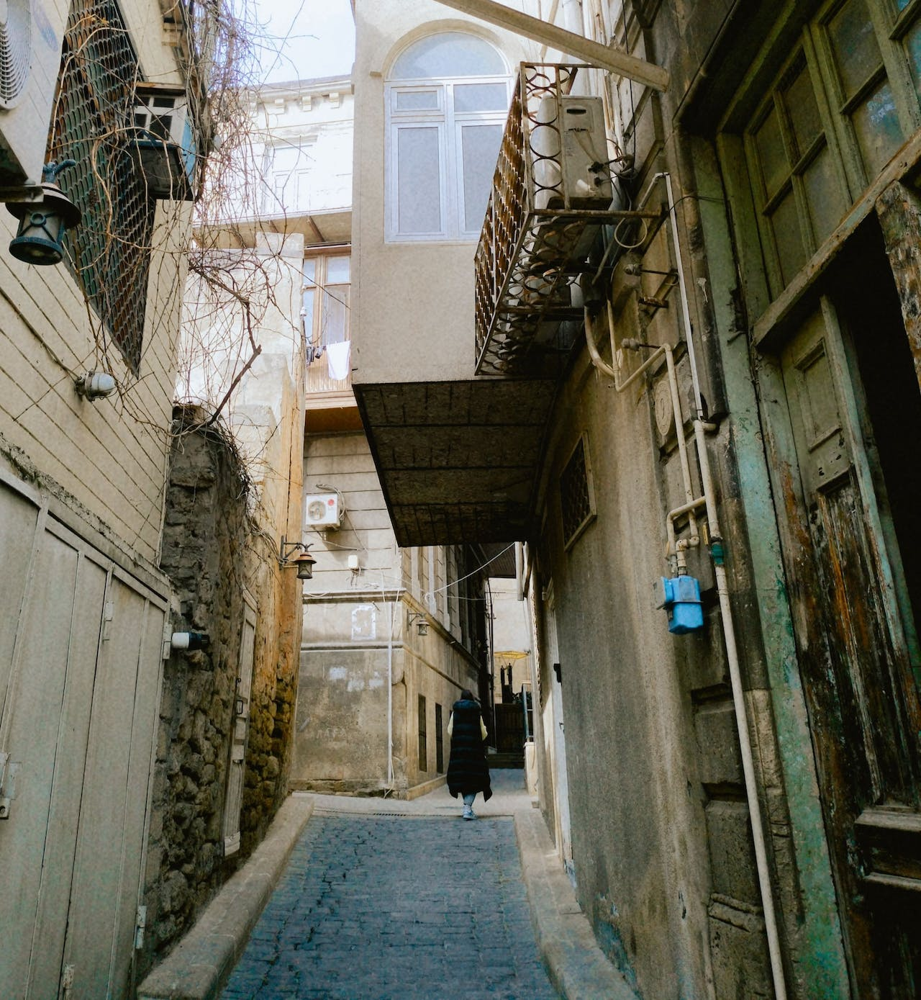

What is Netflix Syria?
Netflix Syria is dedicated to offering a platform that amuses, educates, and promotes cultural understanding while honoring the complexity of Syria's distinct tales. We do this by empowering Syrian viewers with diverse, fascinating, and internationally relevant storytelling.
Netflix Syria was founded in 2019 and was motivated by the rich storytelling traditions of Syria as well as the need for a variety of entertainment. Recognizing the value of cultural representation, the organization set out to find, create, and distribute engaging material that told Syrian stories to audiences around the world in an authentic manner.
